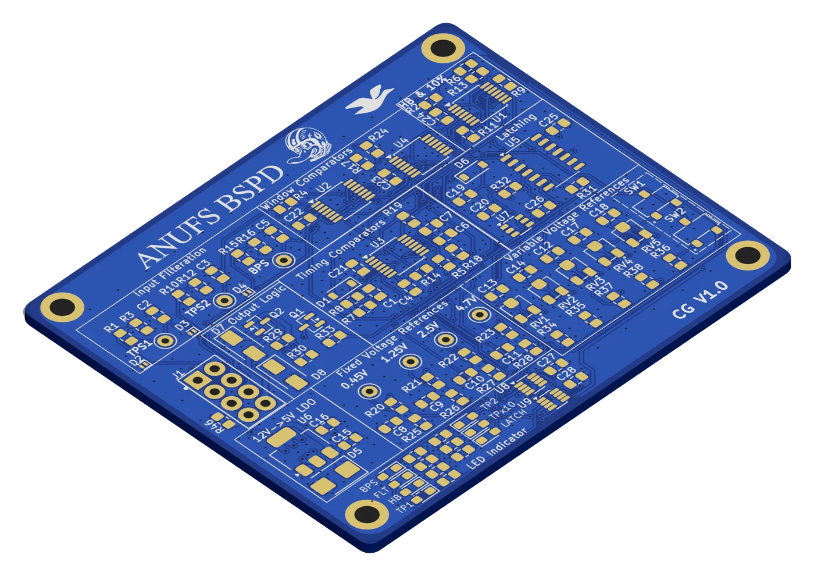
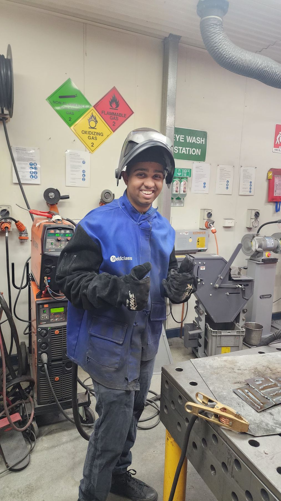
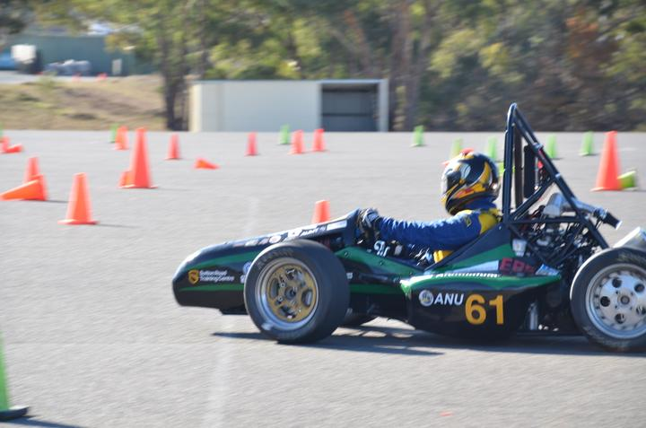
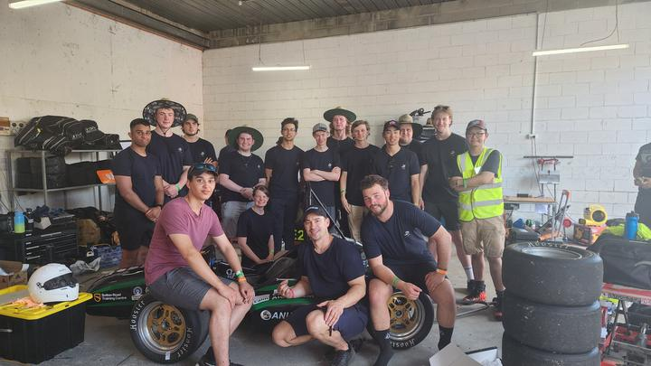
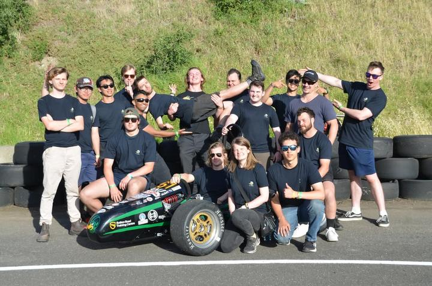
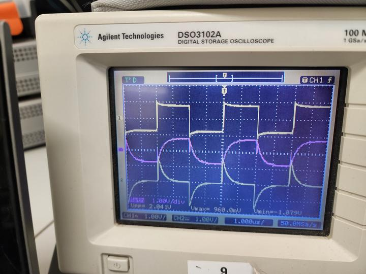

Safety criticalP.01
ANUFS BSPD 2026
The Brake System Plausibility Device for our 2026 combustion car, designed to be AEC-Q100, Q101 and Q200 compliant end to end.
KiCadAEC-QRules compliance
View on GitHub
Mechatronic Systems Engineering
I lead the electronics and controls team at ANU Formula Sport. We're designing the electronics for a new electric car, while keeping our combustion car running.
I'm studying a Bachelor of Engineering (Honours) in Mechatronic Systems at ANU, after finishing a Bachelor of Science in physics and mathematics. Most of my time goes into Formula SAE: designing safety-critical circuits that have to pass scrutineering and last a race weekend.
As Electronics and Controls Lead, I run a team of five engineers, each with their own sub-project. Before engineering, I spent two years as an Army officer cadet at ADFA. That's where I learned to plan, delegate and lead in tough conditions.
I like hardware that is documented, testable and compliant: AEC-Q qualified parts, a written test method, and clear traceability to the rules.






The Brake System Plausibility Device for our 2026 combustion car, designed to be AEC-Q100, Q101 and Q200 compliant end to end.
Custom hardware that logs data from the combustion car while it runs, so the team can make engineering decisions from evidence.
The Tractive System Active Light controller for our upcoming electric car. It tells the driver and marshals when the high-voltage system is live.
An update to the Accelerator Pedal Position Plausibility Device, keeping the car compliant now that it uses paddle shifting.
An STM32 board that mimics the gear position sensor on the 2026 car, so other systems can be developed and tested away from the engine.
A keyboard built from scratch on my own PCB, running QMK with Kailh Choc v2 low-profile switches.
A simple, reusable buck converter I can drop into other projects instead of redesigning the power stage each time.
A PID controller for altitude in a no-turn aircraft model, covering plant modelling, tuning and response analysis in MATLAB.
2024 – now
ANU Formula Sport · 2026 – now
ANU Formula Sport · 2024 – 2025
2025 – now
ANU Rocketry
2021 – 2022
Australian Army · Australian Defence Force Academy
2024 – 2027
Australian National University · expected 2027
2021 – 2024
Australian National University · graduated July 2024
I'm looking for graduate and internship roles in electronics, embedded systems and controls, in Canberra or elsewhere.